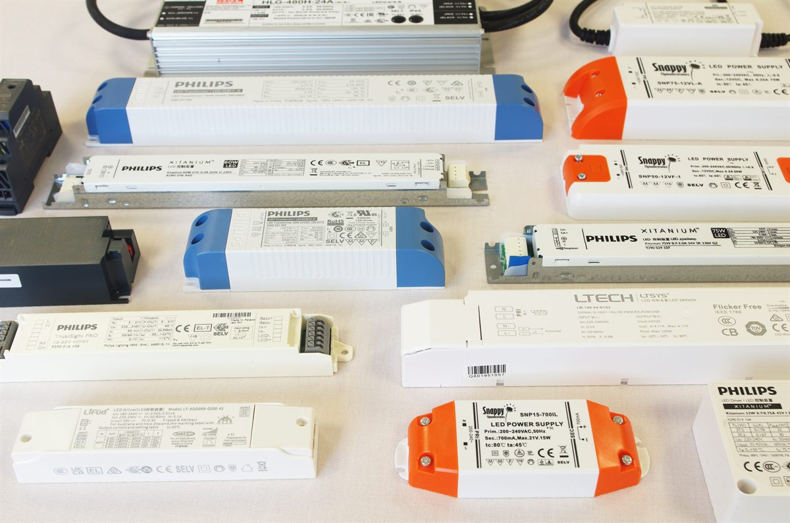

Explore
Explore dimmable LED drivers
Browse our Triac drivers and other dimming options.
How Triac mains dimmable constant current drivers let LED luminaires be dimmed from standard phase-cut wall dimmers, and how to get smooth, flicker-free results.

Overview
A Triac dimmable LED driver is a constant current LED power supply designed to work with a standard mains phase-cut dimmer. The dimmer is wired in the live feed in place of a light switch, and cuts away part of each mains half-cycle. The driver measures how much of the waveform remains and reduces its LED current to match, so luminaires can be dimmed with no extra control wiring.
Our Triac CC range from Lifud, Snappy and LTECH covers 3W to 50W, with output currents from 100mA to 1050mA and output voltages up to 42V. The drivers work with most leading edge and trailing edge dimmers, giving smooth, flicker-free dimming, and some models add mains push dimming or deep dimming down to 0.1%.
The technology
A Triac (phase-cut) dimmer switches the mains supply on and off within every half-cycle, 100 times a second on a 50Hz supply. Turning the dimmer down removes a larger part of each half-cycle, reducing the power delivered.
A leading edge dimmer cuts the start of each half-cycle; a trailing edge dimmer cuts the end. The Triac LED driver detects this conduction angle and converts it into a steady, reduced constant current for the LEDs.
Because the driver smooths the output, the LEDs dim without visible flicker, while the dimmer and wiring stay the same as for a traditional lamp.
Dimmer types
Our Triac drivers work with both types. Choosing the right dimmer is the key to smooth, quiet, flicker-free dimming.
| Feature | Leading edge (RL) | Trailing edge (RC / ELV) |
|---|---|---|
| Part of half-cycle removed | The start | The end |
| Designed for | Incandescent and wire-wound transformer loads | Electronic transformers and LED drivers |
| Switching | Abrupt switch-on, can cause buzz and inrush | Gentle switch-on, usually quieter |
| Minimum load | Often higher | Often lower, better for small LED loads |
| With our Triac drivers | Compatible: check the dimmer's LED rating | Compatible: usually the smoothest results |
Our range
Choose the power and current to suit the LEDs, then the size and features you need.
| Series | Power | Output | Current setting | Features |
|---|---|---|---|---|
| Snappy SP3 | 3 – 10W | 350 / 500 / 700mA, 2.5–29V | Model choice | Miniature size |
| Lifud LF-GD | 3 – 30W | Constant current | DIP switch | Leading / trailing edge |
| LTECH TD-9 / TD-10 | 9W, 10W | 100 – 700mA, 9–42V | Adjustable | Compact |
| LTECH SE-9 to SE-15 | 9W, 12W, 15W | 100 – 700mA, 2–42V | Adjustable | Wide voltage window |
| Snappy SP | 10 – 36W | Constant current | Fixed | Short circuit, overload, over temperature protection |
| Lifud LF-AAT | 8 – 40W | 100 – 1050mA, 9–42V | DIP switch | Smart MCU, 0.1% dimming depth |
| LTECH SE-30 / SE-40 | 30W, 40W | 150 – 1050mA, 9–42V | DIP switch | Triac / ELV, soft-on, 0.1% depth |
| PSU-SEA TD | 30 – 50W | Constant current | Choice of fixed values | Triac and mains push dimming |
Benefits
Why Triac dimming is a popular choice for retrofit, residential and hospitality lighting.
The dimmer replaces the light switch in the existing live feed, with no separate control cables.
Upgrade existing dimmed circuits to LED without rewiring walls or ceilings.
Flicker-free 0–100% dimming, down to 0.1% on selected models.
Works with most leading and trailing edge dimmers from the major wiring-accessory brands.
Users keep the rotary or push dimmers they know, with no app or programming needed.
The simplest, lowest-cost way to add dimming to small LED installations.
Selection & set-up
Compare other dimming methods and driver types:
Wherever LED lighting needs to be dimmed from a standard wall dimmer.
Downlights and pendants on existing living-room and bedroom dimmers.
Restaurant, bar and hotel room lighting with simple mood control.
Spot and accent lighting in smaller shops and showrooms.
LED upgrades on circuits that already have phase-cut dimmers.
Presentation dimming without a separate control system.
Compact drivers built into dimmable downlights and decorative fittings.
Explore
Browse our Triac drivers and other dimming options.
FAQ
Our team can help you choose a Triac driver and compatible dimmer for smooth, flicker-free results.
Talk to Our Engineers